Why this project
A GRE tunnel encapsulates traffic between two routers so their private networks can reach each other across a transit network that wouldn't normally route between them. It's a foundational building block behind a lot of site-to-site connectivity — but it's also easy to configure halfway and assume it's working. This project deliberately tests connectivity before the tunnel exists, after the tunnel interface is created but not bound, after it's bound to real endpoints, and after routing is added — so each failure can be traced to the exact piece that was still missing.
Setup
Two routers, each fronting a separate LAN, connected only by a WAN-facing serial link. Nothing about that WAN link lets 10.10.10.0/24 talk to 10.10.30.0/24 on its own — that's what the tunnel and the routing added on top of it are for.
Confirming the LANs can't reach each other yet
Ping across the WAN fails
From a host on Router1's LAN, pinging a host on Router3's LAN (10.10.30.100) returns "Destination host unreachable" — the expected starting point before any tunnel or routing exists.
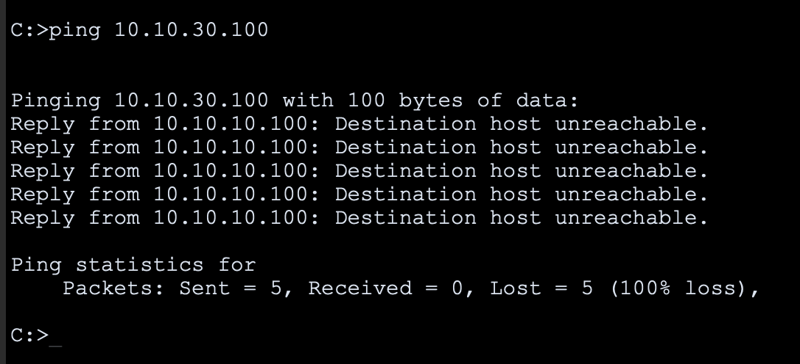
Creating the tunnel interfaces
Create Tunnel0 on Router1
Created the tunnel interface — line protocol immediately goes down, which is correct at this point: the interface exists, but it has no source or destination bound to it yet.
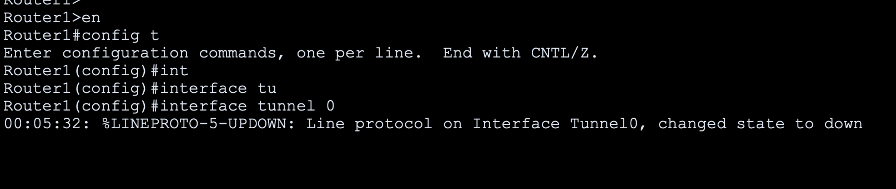
Create Tunnel0 on Router3
Same on Router3 — tunnel interface exists, line protocol down, mirroring Router1's state exactly.
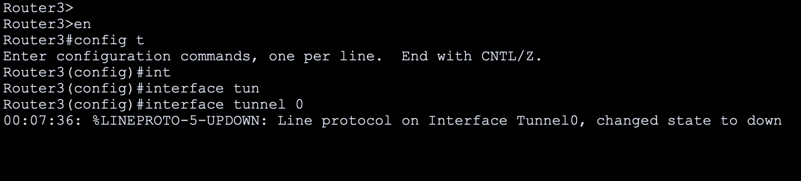
Assign Router1's tunnel IP
Gave the tunnel interface an address in a dedicated /30 — 192.168.0.1 — separate from either LAN or the WAN link.
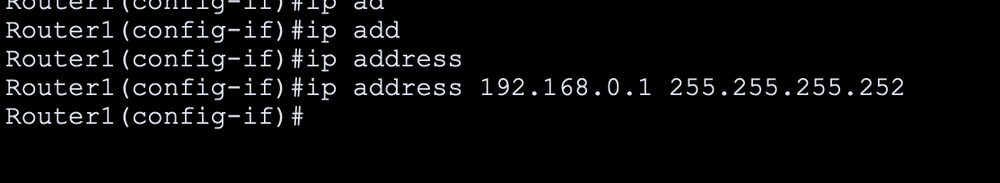
Assign Router3's tunnel IP
The other half of the same /30 on Router3 — 192.168.0.2.
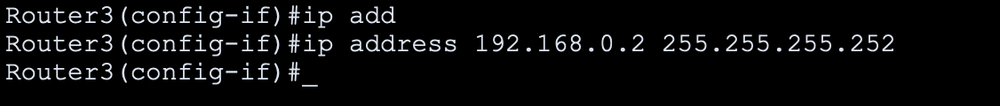
Check interface status
Router1's interface summary shows exactly what's expected mid-build: the WAN serial link and LAN interfaces are up, unused serial ports sit administratively down, and Tunnel0 has an IP but its protocol is still down — addressed, but not yet functional.
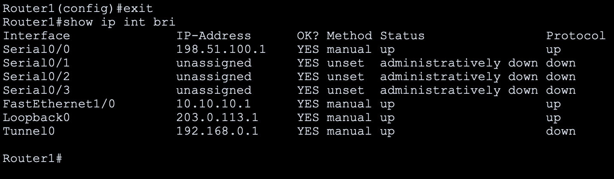
Confirm the tunnel still isn't functional
Pinging the far tunnel endpoint (192.168.0.2) still fails — proof that assigning an IP address to a tunnel interface isn't enough by itself. It still needs to know where the tunnel actually goes.
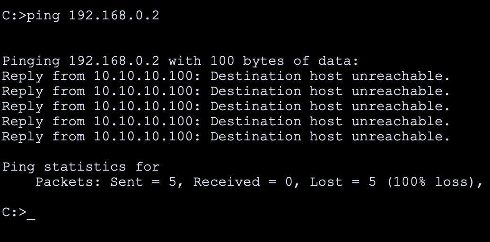
Binding the tunnel to the WAN endpoints
Set Router1's tunnel source and destination
Pointed the tunnel at the real WAN addresses — source 198.51.100.1, destination 198.51.100.6. The line protocol flips to up immediately.
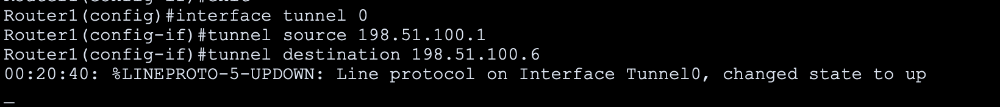
Set Router3's tunnel source and destination
The mirrored configuration on Router3 — source 198.51.100.6, destination 198.51.100.1. Same result: line protocol up.
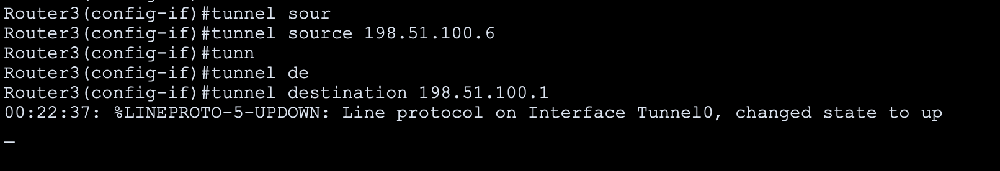
Tunnel connectivity confirmed
Router3 successfully pings Router1's tunnel address (192.168.0.1) — 100% success. The GRE tunnel itself is now fully functional between the two routers.
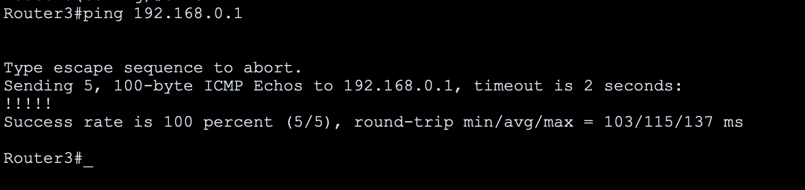
Tunnel shows in the routing table
Router3's routing table now lists the 192.168.0.0/30 tunnel network as directly connected — the tunnel is a real, routable interface at this point, not just an up/up status.
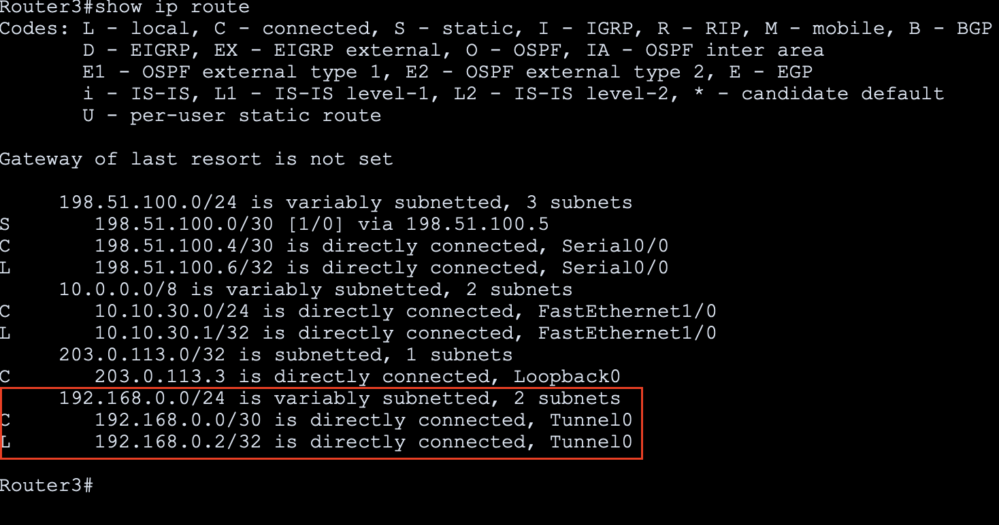
Full interface detail
show interfaces tunnel 0 confirms the complete picture: up/up, correct source and destination, GRE/IP encapsulation — everything matching what was configured.
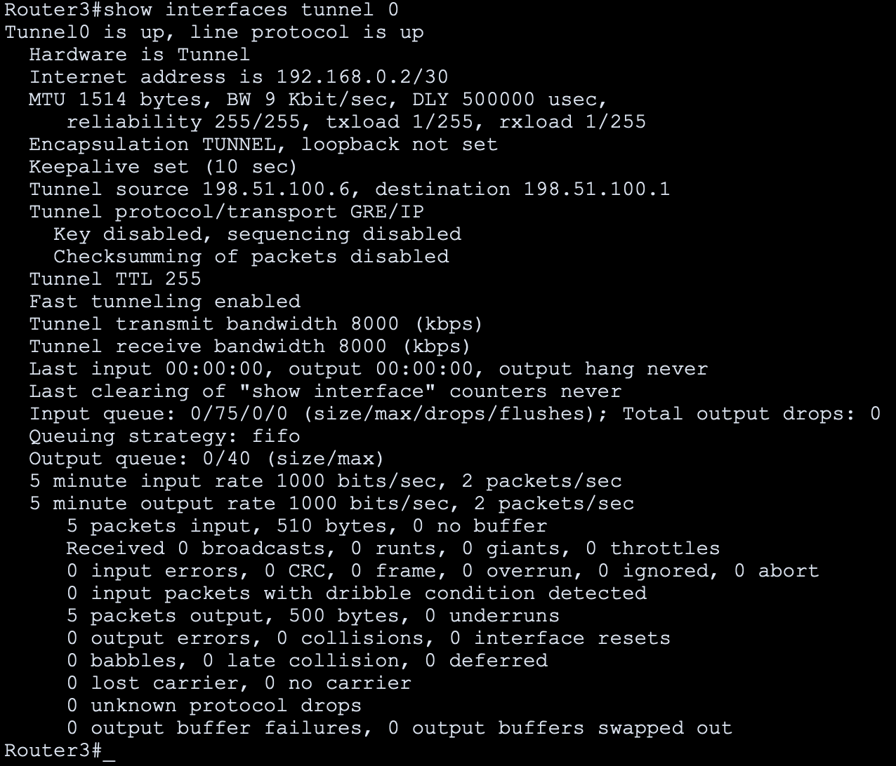
Discovering the tunnel alone isn't enough
The original ping still fails
Even with the tunnel fully up between the routers, the original LAN-to-LAN ping (10.10.30.100) still fails. The tunnel connects the routers — it doesn't automatically tell either router how to reach the other's LAN through it.
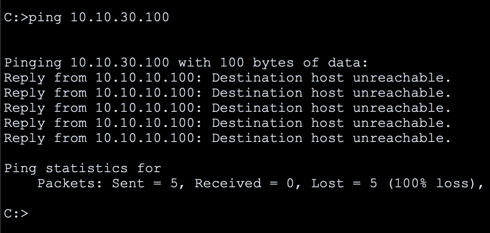
Confirm no dynamic routing is running
show ip protocols on Router3 returns nothing — no OSPF, no EIGRP. This build intentionally uses static routes rather than a dynamic protocol, so the routing has to be added by hand.
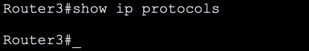
Add the static route on Router3
Pointed traffic for Router1's LAN (10.10.10.0/24) at the tunnel's far address (192.168.0.1) — telling Router3 exactly how to reach the other side.
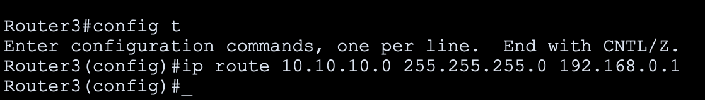
Add the mirrored route on Router1
The reverse route on Router1, pointing traffic for Router3's LAN (10.10.30.0/24) at 192.168.0.2 — the tunnel now has routing configured in both directions.
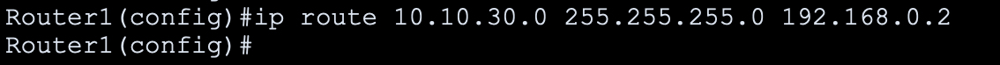
LAN-to-LAN connectivity succeeds
The exact same ping that failed at the very start of this project now succeeds — 100% success rate, both LANs fully reachable across the GRE tunnel.
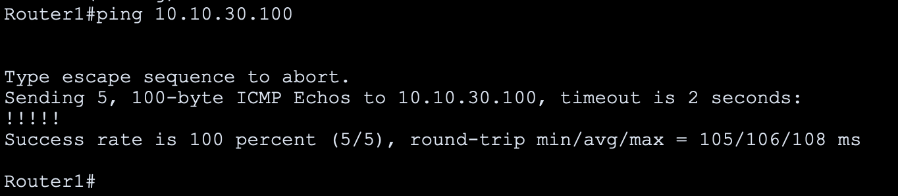
Final routing table
Router3's final routing table shows the complete picture: the static route to 10.10.10.0/24 via the tunnel, and the tunnel network itself as a connected interface — the full path traffic now takes.
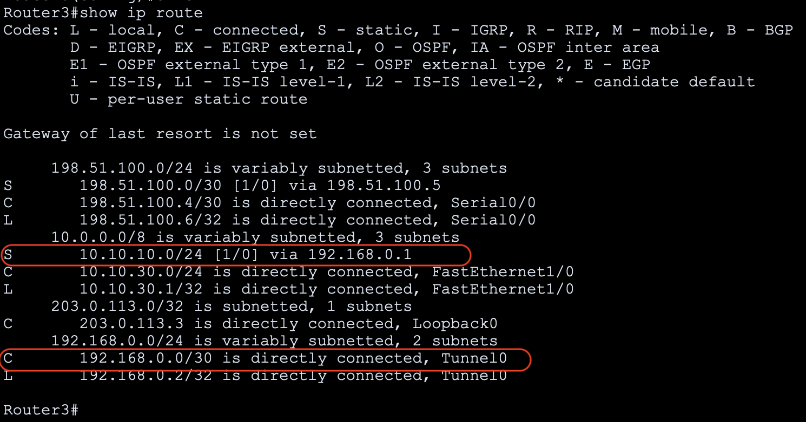
Result: full LAN-to-LAN reachability only came together once three separate things were true — the tunnel interface existed, it was bound to real WAN endpoints, and static routes actually pointed each LAN's traffic into it. Testing after every single step, even the ones that "should" work, made it possible to isolate exactly which piece was still missing instead of debugging blind at the end.
What this demonstrates
- An interface showing "up" doesn't mean traffic can actually get where it's going — a tunnel needs both a working data path and routing that points into it before it's genuinely useful.
- Testing incrementally, after every single command, catches exactly where a chain of dependent configuration breaks — rather than configuring everything at once and debugging a wall of failures at the end.
- GRE tunnels encapsulate traffic, but they don't encrypt it. This design connects two private address spaces over a transit network, but it isn't a substitute for IPsec if confidentiality of the traffic itself matters.
- Static routes work cleanly here because the topology is small and fixed. In a larger or growing environment, this same tunnel would typically carry a dynamic routing protocol instead of hand-maintained routes on each side.